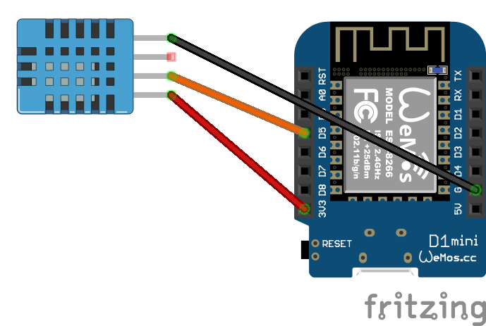

Een slim huis wordt pas echt handig wanneer het weet wat er in een ruimte gebeurt. Temperatuur en luchtvochtigheid zijn daarbij verrassend waardevolle signalen. Juist met die twee metingen kun je Homey veel slimmer laten reageren op comfort, ventilatie en dagelijkse routines.
In dit project draait alles daarom om de DHT11. Geen extra lichtsensor, geen uitgebreide multisensor-opstelling, maar gewoon een eenvoudige en betaalbare klimaatsensor die precies doet wat voor veel Homey-flows al meer dan genoeg is.
Waarom een DHT11 sensor zo handig is
De kracht van dit project zit in de eenvoud. De DHT11 meet temperatuur en luchtvochtigheid en geeft die waarden door aan Homey. Daarmee kun je in één klap meer inzicht krijgen in ruimtes zoals de slaapkamer, zolder, werkkamer of berging.
Denk bijvoorbeeld aan een melding wanneer de luchtvochtigheid te hoog oploopt, een waarschuwing als een kamer te warm wordt of een flow die ventilatie aanstuurt zodra het binnenklimaat daar om vraagt. Juist omdat temperatuur en vochtigheid vaak samen iets zeggen over comfort, voelt een DHT11 sensor in de praktijk meteen bruikbaar.
Benodigdheden
- Wemos D1 Mini of NodeMCU met wifi
- DHT11 temperatuur- en luchtvochtigheidssensor
- USB-voeding voor de Wemos D1 Mini
- Homey met Homeyduino
- Arduino IDE
Handige links bij dit project
Dit zijn producten die aansluiten op de benodigdheden in dit artikel.
Stap-voor-stap uitleg
1. Sluit de DHT11 sensor aan op de Wemos D1 Mini
Voor deze opstelling gebruik je de DHT11 als losse temperatuur- en luchtvochtigheidssensor op pin D5. De aansluiting is overzichtelijk en daardoor ideaal voor een eerste Homeyduino-project.
- VCC → 3.3V
- GND → GND
- DATA → D5
Gebruik je een kale DHT11 zonder printplaatje, dan heb je meestal ook een pull-up weerstand nodig tussen VCC en de datapin. Werk je met een kant-en-klare DHT11 module, dan zit die vaak al op het printje verwerkt.

2. Installeer Arduino IDE en de benodigde libraries
Zorg dat in Arduino IDE de ESP8266 board support, de Homeyduino-library en de library SimpleDHT zijn geïnstalleerd. Kies daarna via Hulpmiddelen → Board het juiste board voor je Wemos D1 Mini.
3. Vul je wifi-gegevens in en upload de code
Open de sketch, vul je eigen wifi-naam en wachtwoord in en upload de code naar je board. In deze versie stuurt de sensor temperatuur en luchtvochtigheid alleen door wanneer de waarden veranderen of wanneer een heartbeat nodig is. Daardoor blijft het netwerkverkeer beperkt en blijft de koppeling met Homey netjes werken.
4. Controleer de metingen via de seriële monitor
Open na het uploaden de seriële monitor in Arduino IDE en zet die op 115200 baud. Je ziet daar of de wifi-verbinding goed tot stand komt en of temperatuur en luchtvochtigheid netjes worden uitgelezen. Juist bij een eerste test is dat handig, omdat je dan meteen ziet of de sensor stabiele waardes teruggeeft.
5. Voeg de sensor toe aan Homey
Zodra de code draait, kun je de DHT11 sensor koppelen via Homeyduino in Homey. Daarna verschijnen temperatuur en luchtvochtigheid als bruikbare meetwaarden in de app, in Insights en in je flows. Daarmee verandert deze eenvoudige zelfbouwsensor direct in een praktische bouwsteen voor comfort, ventilatie en meldingen.
Software en koppeling
Deze versie is volledig gericht op klimaatmetingen. In plaats van meerdere sensoren en capabilities gebruik je hier alleen de twee belangrijkste capabilities voor een DHT11: temperatuur en luchtvochtigheid. Daarmee blijft het project overzichtelijk, terwijl het in Homey meteen praktisch inzetbaar is.
Homey.addCapability("measure_temperature");
Homey.addCapability("measure_humidity");Dat maakt dit project ideaal als eerste kennismaking met Homeyduino. Je bouwt geen ingewikkelde multisensor, maar een duidelijke basis die je later altijd nog kunt uitbreiden.
Code voor de DHT11 sensor
Onderstaande sketch gebruikt een DHT11 op pin D5 en stuurt temperatuur en luchtvochtigheid door naar Homey. De code controleert de wifi-verbinding, filtert ongeldige waarden eruit en synchroniseert gemiste updates opnieuw zodra de verbinding terugkomt. Vul alleen nog je eigen wifi-gegevens in.
#include <ESP8266WiFi.h>
#include <Homey.h>
#include <SimpleDHT.h>
// =========================
// Configuratie
// =========================
namespace Config {
constexpr const char* WIFI_SSID = "<SSID>>";
constexpr const char* WIFI_PASSWORD = "<PASSWORD>";
constexpr uint8_t DHT_PIN = D5;
constexpr unsigned long SENSOR_UPDATE_INTERVAL_MS = 30000;
constexpr unsigned long WIFI_CHECK_INTERVAL_MS = 60000;
constexpr unsigned long WIFI_CONNECT_TIMEOUT_MS = 30000;
constexpr unsigned long HOMEY_HEARTBEAT_INTERVAL_MS = 300000; // 5 minuten
constexpr const char* HOMEY_DEVICE_NAME = "DHT11 Sensor";
constexpr const char* HOMEY_DEVICE_CLASS = "sensor";
constexpr const char* CAPABILITY_TEMP = "measure_temperature";
constexpr const char* CAPABILITY_HUMIDITY = "measure_humidity";
}
// =========================
// Datamodellen & State
// =========================
struct ClimateReading {
int temperature = 0;
int humidity = 0;
};
struct ClimateState {
ClimateReading currentReading;
ClimateReading lastPublishedReading;
bool hasReading = false;
bool hasPublished = false;
bool dirty = false;
unsigned long lastSampleAt = 0;
unsigned long lastPublishAt = 0;
};
struct WifiState {
unsigned long lastCheckAt = 0;
bool wasConnected = false;
bool reconnectedEvent = false;
};
ClimateState climateState;
WifiState wifiState;
SimpleDHT11 dht11;
// =========================
// Functiedeclaraties
// =========================
void connectToWifiWithTimeout();
void maintainWifi(unsigned long currentMillis);
bool canPublishToHomey();
void initializeHomey();
void processClimateSensor(unsigned long currentMillis);
bool readClimate(ClimateReading& reading);
bool isValidClimateReading(const ClimateReading& reading);
void markLatestClimateReading(const ClimateReading& reading);
bool shouldPublishClimateReading(unsigned long currentMillis);
void publishLatestClimateToHomey(unsigned long currentMillis);
void syncClimateIfDirty(unsigned long currentMillis);
void logClimateReading(const ClimateReading& reading);
// =========================
// Setup & Loop
// =========================
void setup() {
Serial.begin(115200);
Serial.println();
Serial.println(F("--- Klimaat Sensor Systeem Gestart ---"));
connectToWifiWithTimeout();
initializeHomey();
// Zorg dat eerste sample direct kan plaatsvinden
climateState.lastSampleAt = millis() - Config::SENSOR_UPDATE_INTERVAL_MS;
}
void loop() {
Homey.loop();
yield();
const unsigned long currentMillis = millis();
maintainWifi(currentMillis);
if (wifiState.reconnectedEvent) {
wifiState.reconnectedEvent = false;
syncClimateIfDirty(currentMillis);
}
processClimateSensor(currentMillis);
}
// =========================
// WiFi-beheer
// =========================
void connectToWifiWithTimeout() {
WiFi.mode(WIFI_STA);
WiFi.begin(Config::WIFI_SSID, Config::WIFI_PASSWORD);
Serial.print(F("Verbinden met WiFi..."));
const unsigned long startAttemptTime = millis();
while (WiFi.status() != WL_CONNECTED &&
millis() - startAttemptTime < Config::WIFI_CONNECT_TIMEOUT_MS) {
delay(500);
Serial.print(F("."));
}
Serial.println();
if (WiFi.status() == WL_CONNECTED) {
Serial.print(F("[SUCCES] Verbonden! IP-adres: "));
Serial.println(WiFi.localIP());
wifiState.wasConnected = true;
} else {
Serial.println(F("[WIFI] Timeout bereikt. Sensor start zonder wifi."));
wifiState.wasConnected = false;
}
}
void maintainWifi(unsigned long currentMillis) {
if (currentMillis - wifiState.lastCheckAt < Config::WIFI_CHECK_INTERVAL_MS) {
return;
}
wifiState.lastCheckAt = currentMillis;
wifiState.reconnectedEvent = false;
Serial.print(F("[DEBUG] WiFi status: "));
Serial.print(WiFi.status());
Serial.print(F(" | IP: "));
Serial.println(WiFi.localIP());
const wl_status_t status = WiFi.status();
if (status == WL_CONNECTED) {
if (!wifiState.wasConnected) {
Serial.print(F("[WIFI] Opnieuw verbonden! IP-adres: "));
Serial.println(WiFi.localIP());
wifiState.wasConnected = true;
wifiState.reconnectedEvent = true;
}
return;
}
if (wifiState.wasConnected) {
Serial.println(F("[WIFI] Verbinding kwijt. Herstellen..."));
wifiState.wasConnected = false;
} else {
Serial.println(F("[WIFI] Nog niet verbonden. Nieuwe poging..."));
}
WiFi.begin(Config::WIFI_SSID, Config::WIFI_PASSWORD);
}
bool canPublishToHomey() {
return WiFi.status() == WL_CONNECTED;
}
// =========================
// Homey initialisatie
// =========================
void initializeHomey() {
Homey.begin(Config::HOMEY_DEVICE_NAME);
Homey.setClass(Config::HOMEY_DEVICE_CLASS);
Homey.addCapability(Config::CAPABILITY_TEMP);
Homey.addCapability(Config::CAPABILITY_HUMIDITY);
}
// =========================
// Klimaatlogica
// =========================
void processClimateSensor(unsigned long currentMillis) {
if (currentMillis - climateState.lastSampleAt < Config::SENSOR_UPDATE_INTERVAL_MS) {
return;
}
climateState.lastSampleAt = currentMillis;
ClimateReading reading;
if (!readClimate(reading)) {
return;
}
if (!isValidClimateReading(reading)) {
Serial.println(F("[FOUT] Ongeldige klimaatwaarde ontvangen."));
return;
}
logClimateReading(reading);
markLatestClimateReading(reading);
if (shouldPublishClimateReading(currentMillis)) {
publishLatestClimateToHomey(currentMillis);
}
}
bool readClimate(ClimateReading& reading) {
byte temperature = 0;
byte humidity = 0;
const int err = dht11.read(Config::DHT_PIN, &temperature, &humidity, NULL);
if (err != SimpleDHTErrSuccess) {
Serial.print(F("[FOUT] DHT11 uitlezen mislukt, err="));
Serial.println(err);
return false;
}
reading.temperature = static_cast<int>(temperature);
reading.humidity = static_cast<int>(humidity);
return true;
}
bool isValidClimateReading(const ClimateReading& reading) {
const bool validTemperature = (reading.temperature >= 0 && reading.temperature <= 50);
const bool validHumidity = (reading.humidity >= 0 && reading.humidity <= 100);
return validTemperature && validHumidity;
}
void markLatestClimateReading(const ClimateReading& reading) {
climateState.currentReading = reading;
climateState.hasReading = true;
if (!climateState.hasPublished) {
climateState.dirty = true;
return;
}
const bool temperatureChanged =
reading.temperature != climateState.lastPublishedReading.temperature;
const bool humidityChanged =
reading.humidity != climateState.lastPublishedReading.humidity;
climateState.dirty = temperatureChanged || humidityChanged;
}
bool shouldPublishClimateReading(unsigned long currentMillis) {
if (!climateState.hasReading) {
return false;
}
const bool heartbeatReached =
(currentMillis - climateState.lastPublishAt) >= Config::HOMEY_HEARTBEAT_INTERVAL_MS;
return climateState.dirty || heartbeatReached;
}
void publishLatestClimateToHomey(unsigned long currentMillis) {
if (!climateState.hasReading) {
return;
}
if (!canPublishToHomey()) {
climateState.dirty = true;
Serial.println(F("[WAARSCHUWING] Laatste klimaatstatus lokaal bewaard (Geen WiFi)."));
return;
}
Homey.setCapabilityValue(Config::CAPABILITY_TEMP, static_cast<float>(climateState.currentReading.temperature));
Homey.setCapabilityValue(Config::CAPABILITY_HUMIDITY, static_cast<float>(climateState.currentReading.humidity));
climateState.lastPublishedReading = climateState.currentReading;
climateState.lastPublishAt = currentMillis;
climateState.hasPublished = true;
climateState.dirty = false;
Serial.println(F("[HOMEY] Klimaatgegevens verzonden."));
}
void syncClimateIfDirty(unsigned long currentMillis) {
if (!climateState.dirty) {
return;
}
Serial.println(F("[HOMEY] Laatste klimaatstatus synchroniseren..."));
publishLatestClimateToHomey(currentMillis);
}
void logClimateReading(const ClimateReading& reading) {
Serial.print(F("Klimaat: "));
Serial.print(reading.temperature);
Serial.print(F(" C | "));
Serial.print(reading.humidity);
Serial.println(F(" % vochtigheid"));
}Voorbeelden van flows
- Laat Homey een melding sturen wanneer de luchtvochtigheid in de badkamer te hoog oploopt.
- Gebruik temperatuur als trigger om een ventilator of slimme stekker in te schakelen.
- Maak een comfortflow voor de slaapkamer wanneer de temperatuur boven een bepaalde grens uitkomt.
- Gebruik luchtvochtigheid en temperatuur als extra inzicht in ruimtes waar je schimmel of condens wilt voorkomen.
Conclusie
Met een DHT11 sensor en een Wemos D1 Mini bouw je voor weinig geld een verrassend bruikbare Homeyduino sensor. Juist doordat dit project zich volledig richt op temperatuur en luchtvochtigheid blijft het overzichtelijk, betaalbaar en praktisch. Een ideaal instapprogramma dus, maar ook gewoon een handige bouwsteen voor een slimmer en comfortabeler smart home.